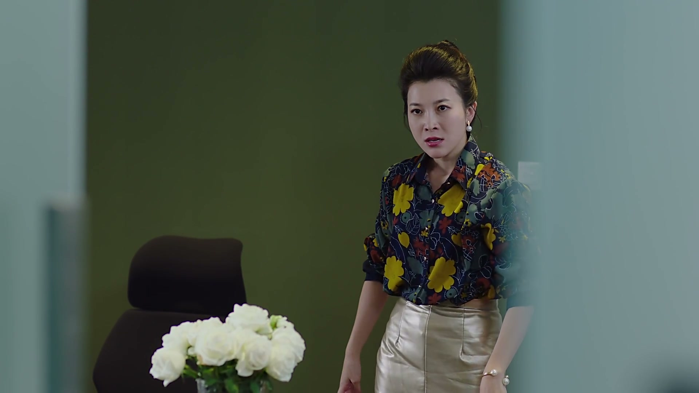
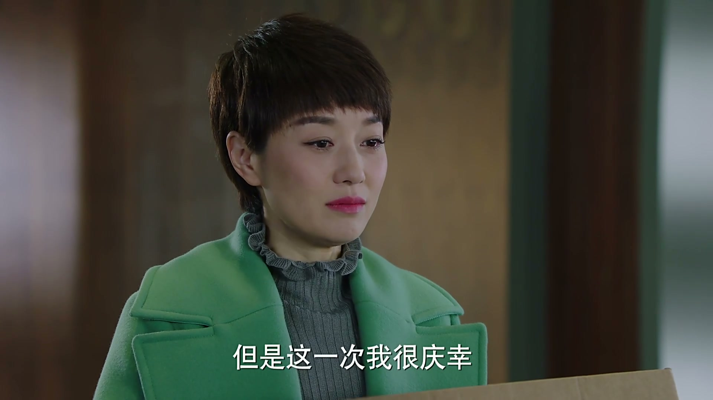
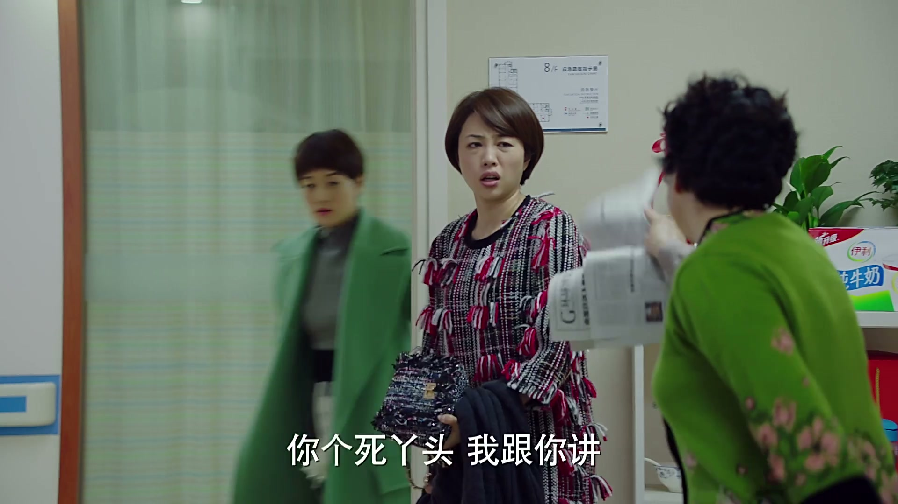
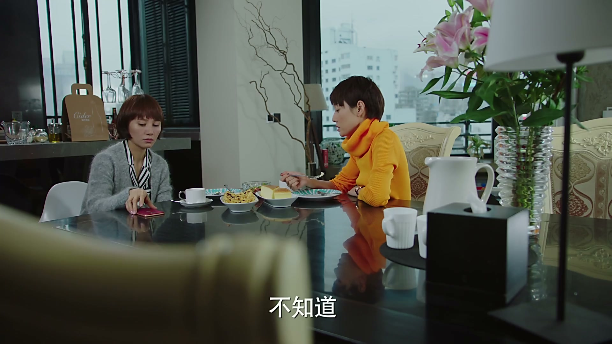
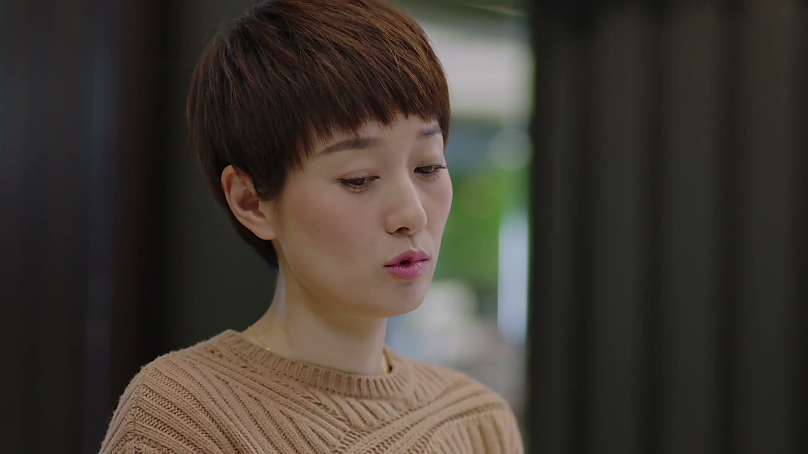

出气成功，不等于职场胜利
情境：子君扳倒费尔，自己也被苏曼殊当场赶走。
遇到这种情况，可以这样做
- 报复行动的风险评估里，要写上「自己会被开」这一行。
- 被贴上「某人奸细」后，解释空间会急剧变窄。
- 冲动的正义感，常把盟友也推进对立面。

Drama Recap · 剧情图文总结
第 34 集 · 砸饭碗·进辰星
冒充东窗事发，苏曼殊骂她是贺涵奸细、当场开除。子君反而有成就感：这次知道自己会什么、能去哪。她向唐晶坦白杭州生日夜，又拿五万逼子群与阿辉断干净。吴大娘与唐晶都说机会够好就冲——贺涵却让唐晶拦住她别进辰星。她仍去了：信息组入职第一天，凌玲坐在她身后。
丢了调查公司的饭碗，她偏要走进前夫与现任的办公室——自己打伞，不靠谁罩一辈子。
第34集，后果落地，选择加码。 贺涵听说费尔被开除还可能被起诉，有人冒充唐晶向丹和盘托出；俊生承认资料是自己给的——给了罗子君。贺涵又怒又笑：胆子太大，越过上级直扑客户，毕业设计该打满分；可费尔已在追查真凶。
剧里的鸡毛蒜皮，往往是人生的缩影。这些情节不只是故事——当你在现实中遇到同样的处境时，它们能提醒你：先做什么、别做什么、怎么说才有效。
情境：子君扳倒费尔，自己也被苏曼殊当场赶走。
情境：子君失业却有成就感——因为知道自己会什么、能去哪。
情境：杭州夜拖到费尔案发后才告诉唐晶。
情境：子君给子群五万，附加断联与计划三条。
情境：唐晶喊冲，贺涵喊停；子君仍选择进辰星。
情境：凌玲点破：贺涵自身难保，别指望他罩你。
贺涵听说费尔突然被开除，还可能面临起诉；又有人冒充唐晶去找丹，把事情全部抖露。他问谁会有费尔这些年在公司做的项目资料。
俊生承认：是我给的——给了罗子君。她一直觉得贺涵处境自己有责任，想补偿；在吴大娘那儿看到费尔与丹的合作计划，觉得有问题才动手。贺涵又笑又叹：胆子太大，越过上级越过公司直扑客户还冒充唐晶，毕业设计该打满分；但费尔已知不是唐晶，正在查，很快会暴露。
关键台词 · KEY QUOTES

苏曼殊把子君骂到墙上：费尔的事人家给我们留下一坐，你倒好把人踢翻；怀疑她是贺涵安插的奸细——他受一点委屈你就要替他粉身碎骨。
她宣布如意算盘打错了，贺涵自身难保；勒令子君马上收拾东西消失。同事窃窃：贺涵不行了她也跟着倒霉，很难翻身。
关键台词 · KEY QUOTES

子君向贺涵道歉：当初来这儿是你领我来的，现在要走了。可她说自己比以往任何时候都有成就感。贺涵提醒：你已经失业，还有儿子、妈妈、妹妹、妹夫要养。
她说苏曼殊赶人时想起俊生要离婚的场景，都像自己砸自己的饭碗；但这一次庆幸——知道自己有什么、会什么、可以到哪里去、接下来干什么。她谢谢贺涵，也谢谢唐晶：今天的罗子君是你们造就的。贺涵纠正：准确讲，这一切都是通过你的能力换来的。下一步？走一步看一步。
关键台词 · KEY QUOTES
唐晶问她为什么不惜一切半道费尔。子君坦白：你从香港回来前一天，费尔突然辞职、人人找不到贺涵——他其实跟我在一起。她在杭州出差，母亲把平儿独留酒店，俊生电话不通，只好求贺涵去看孩子；那天是平儿生日，他心软把平儿和母亲送到杭州，才耽误回公司。
唐晶问为何不早说；子君怕她多心、怕闲言碎语。唐晶不吃这套：别人不知道我们什么关系，真有事我拿你们说过的狠话也能秒拆。子君说算还人情；唐晶让她别分那么清，婚礼杂事都可交给现在没事的她。
关键台词 · KEY QUOTES

白光请假：子群回来了，去医院看妈和崔叔叔。子君同往。薛甄珠劈头骂女儿跑深圳也不商量，就为证实阿辉有老婆——有妻的男人不能碰，名不正言不顺，没有好下场。
白光跪求别再走，说真改了、帮老卓干活再脏再累不怕。子群说两边都不能要：有老婆的不老实，两天风情三天打雷的也不能要。子君让她先回自己家住两天再谈；嘱白光过几天到店里见，别再找阿辉。崔宝剑病房里，母亲继续念书按摩，劝他有信心。
关键台词 · KEY QUOTES
谈及唐晶去夏威夷或澳洲结婚、机票新郎新娘出，子群酸一个月两千房租都发愁。子君反击：你跟白光混、跟阿辉浪费生命时，人家在拼命工作。子群问嫁进豪门还有什么苦恼；子君说身边若有选择，当然要想跟谁有未来。
她拿出一笔钱：真给，但有条件——第一说明用途要有计划；第二与阿辉断绝一切往来；第三与白光保持距离，别一跪就软、一吵就跑。刚跟阿辉约的见面？不见面最清楚。要么去找阿辉，要么问我拿钱。
关键台词 · KEY QUOTES
吴大娘来电：昨晚怎么不接贺涵电话？她跟贺涵在一起。离职后她一直问猎头有没有更好机会；今日重点是——辰星人事部正在招人。子君吓得说不可能去，里头厉害关系她清楚。
吴大娘承认复杂：在前夫公司、在前夫现任老婆所在部门工作确实难，但抛开人情这是非常合适的机会，市场调查只是下游，能进咨询是麻雀变凤凰。她加码：贺涵在辰星四面楚歌，你去辅助部门也能有机会帮他一把。子君不想跟贺涵走太近；吴大娘说相处不必只有恋爱结婚一条路，推来猎头微信——这次可能是你帮到贺涵。
关键台词 · KEY QUOTES

唐晶绕路买蛋糕，笑她不上班闲得开花，又说帮她找了份钱差不多却不那么忙的工作——怕她忙得没时间找男朋友。子君反问：若有更好薪水与空间，却必须置身复杂人事，该怎么办？唐晶说机会够好就去，职场如战场，看准了挥着武器冲进去，不是它倒下就是你倒下。
子君不让她问贺涵知不知道。电话那头，贺涵叮嘱唐晶：如果这几天碰到罗子君，说他想到辰星上班，阻止他——对这一行远远不够，让她再找同级别市场调查公司。子君旁白：到底是向万劫不复又近一步，还是如吴大娘所说看见另一片阳光。
关键台词 · KEY QUOTES
子君想好了：决定去辰星，请吴大娘给人事做推荐。凌玲在家得知人事正式通知，质问贺涵为何把子君弄进信息组——考虑过子君、凌玲、她自己的感受吗？贺涵说让唐晶警告过别来，没想到她还是来了。
子君当面承认：是我自己要去的，怕错过再等三五年。她想过难熬，但会认真工作、公事公办；knowledge group 不是最终目标，希望两年内跟进线路组。凌玲提醒贺涵晚上又被新人替代，别把贺涵当保护伞——工作只为自己，没有人会打一辈子的伞，不如自己打伞。俊生嘱公事公办；凌玲追问子君贺涵唐晶三人关系，俊生含糊带过。
关键台词 · KEY QUOTES

子君把五万交给子群：换一个独立幸福的你，再多几个五万都值得。送平儿考试后，她到辰星报到。凌玲来接，介绍新同事，座位就在子君后面——有事直接问我；还订了欢迎餐，子君想先熟悉业务。同事蔡蔡打招呼。
贺涵看房时责备她一意孤行：环境不适合，人事变动大，怕凌玲算计，俊生也不是对手。子君说算计再坏也坏不过上次把婚姻算计掉；她已从他身上学到足够，想要一个相对平等的机会，说不定有一天并肩作战。贺涵叹不能小看她。病房里母亲给崔宝剑按摩。入职材料、徽章制度；唐晶来看第一天上班的子君，费尔侧目，唐晶说找罗子君——陈俊生也可以。
关键台词 · KEY QUOTES
被开除后反有成就感；向唐晶坦白杭州；带条件资助子群；无视劝阻入职辰星。
得知资料出自俊生之手；肯定子君能力；却嘱唐晶阻止她进辰星。
听完杭州真相不追究；喊职场如战场；又夹在贺涵「阻止」指令与子君决心之间；入职日来探望。
力荐辰星人事机会，强调从乙方到甲方，并说可能是子君帮到贺涵。
怒问贺涵与俊生；提醒别当保护伞；入职日把座位安排在子君正后方。
深圳证实阿辉有妻后进退两难；面对姐姐的五万与三条件。
痛骂奸细嫌疑，当场赶走子君，让本集代价落地。
俊生一句承认，把冒充案的弹药库钥匙交到聚光灯下。
苏曼殊的开除令，把子君的义气写成失业证明。
贺涵拒绝「造就」叙事，把功绩归还给当事人。
杭州生日夜终于对唐晶开口——晚到，但完整。
唐晶喊冲锋，贺涵喊刹车；同一份关心，两份指令。
凌玲的欢迎词客气得像监控——方便，也意味着无处躲。
子君给自己两年转线路组。凌玲与人事会不会把时间表撕掉？
贺涵四面楚歌，她进场是援军还是新的把柄？
子群能否守住与阿辉、白光的距离，还是下一集继续跪与跑？
战场理论与贺涵的阻止如何共存？闺蜜立场会否被迫选边？
第一天的礼貌背后，凌玲会用什么方式让「公事公办」失效？